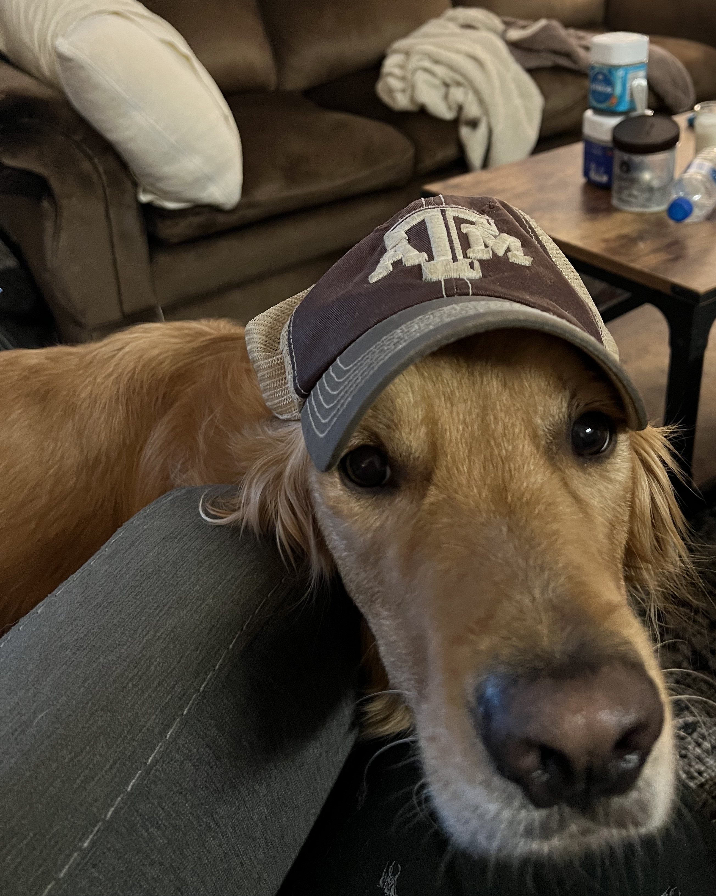

About
Since you made it this far, I was hoping to share a little bit about
myself. To keep it slightly interesting, I am going to tackle my
hobbies and interest at a quick and high level. The main hobbie I
currently have is tennis. I have been involved in it since around 13
years old and have always tried to keep it up. My next hobby is wake
surfing. This is more of a hobby I have back home, but I try to go
back as much as I can. Outside of my hobbies I have a regular family
size with 1 brother. I also have a dog that lives with me down in
College Station. He is a Golden Retriever named Milo. He is around 3
years old and has been a great addition to my life down here. Moving
past my normal life, my academic and professional life has been going
well so far. My current interest in computer science mainly center
around full stack web development. I have been starting to develop
more of an interest in artificial intelligence and machine learning,
but pursueing a career in those fields is still far off. Going back to
full-stack, this summer I am planning on starting a full time job in
Dallas. I am not sure on my team details yet, but I am hoping for the
best. The company has been held in high standards by peers in computer
science, so I think it will be a great fit.
